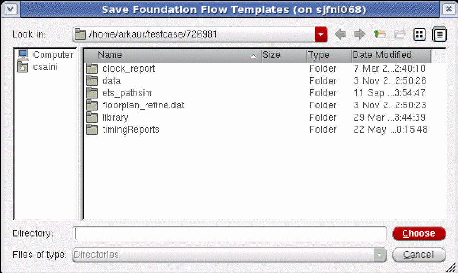

Setting up the Foundation Flow Environment
You can create a foundation flow environment in two ways:
Using the Command Prompt
You can extract the foundation flows by running the write_flow_template command.
-
Create a run directory and change directory to it
mkdir your_work_area/RUN1cd your_work_area/RUN1 -
Run the
write_flow_templatecommand. This command copies the Tempus Foundation Flows templates into the directory you specify (or to the current directory if you do not specify a directory with the-directoryparameter):write_flow_template -directory
Using the GUI
You can select an option to save the templates in a new directory.
The Save Foundation Flow Templates dialog box prompts you to choose the directory to save the templates. A message confirms that the foundation flow templates have been saved at the selected location.
Figure -2 The Save Foundation Flow Templates Form

Return to top